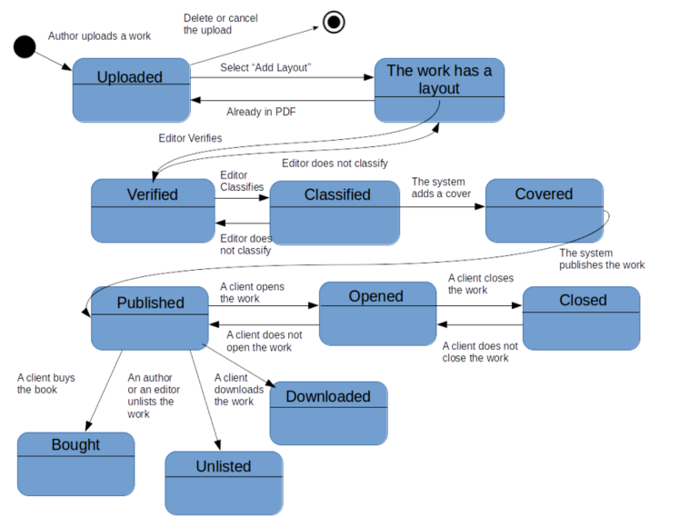
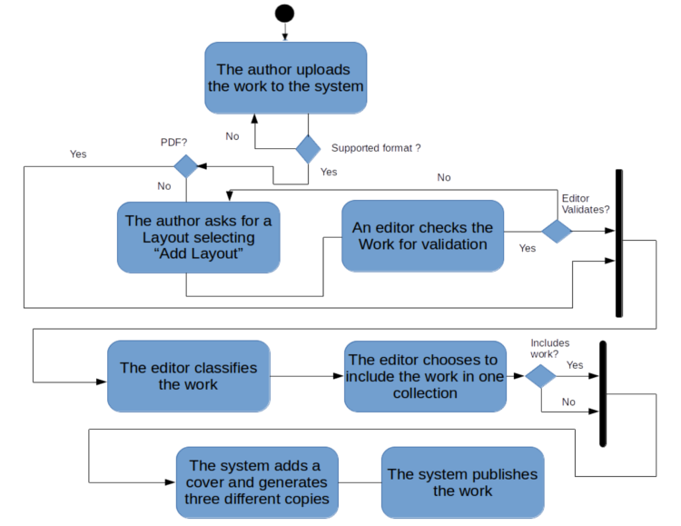
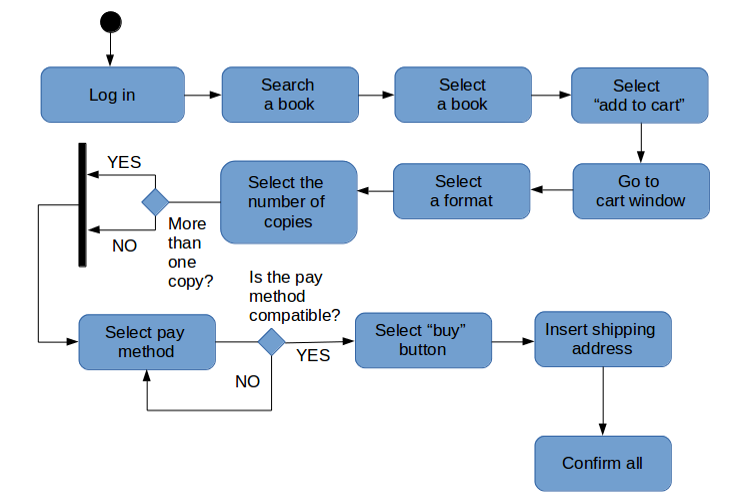

Task 1: State diagram for a class whose instances pass through a series of states.

Task 2: Identify non-functional requirements.
• Product:
The system should be able to...• Organizational:
- search the book that the user wants from among all the books in the database.
- sell the book that the user wants to buy.
- alert the user if the book he/she wants to buy is not in stock and provide information about when it will be available again.
- recommend books that may like to the client, according his/her last searches and purchases.
- be accessible through different dispositives and operative systems.
- be good in efficiency levels, for example, have a quick execution time.
- proportionate a user account to login into the website.
- respect the robustness criteria, for example, provide a buy window when the client wants to purchase a book instead of a search window.
- provide an advanced search window if the user doesn't find what he/she's looking for.
The system should permit that only...
- authors and editors can publish, unpublish and edit the works.
- layout designers can design cover pages, apply formats and incorporate watermarks in the online versions.
- clients can make donations to authors and rate their works.
- A book could not be bought if the client has not previously selected which one he/she wants, if he does not have the accepted payment methods (PayPal, Credit card or Cash) or if he/she has not been previously logged in the system.• External:
- The workers could not exercise as a layout designer, author or editor if they have not previously been logged in with their special account.
- The sales policy must be applied in an ethical and fair way, considering the prices and taxes (IVA) established by the law.• Checkable:
- The data protection policy must be present with the shipping address, the bancary account, the client's DNI and telephone number, etc.
The system should be able to verify that...
- any user have the same identify name in the website to prevent possible mistakes.
- the password introduced by the user to login is correct.
- exists the account which with the user wants to login.
Task 3: Activity diagrams: Publishing a book and Purchasing a book.
PUBLISHING A BOOK.

PURCHASING A BOOK.
